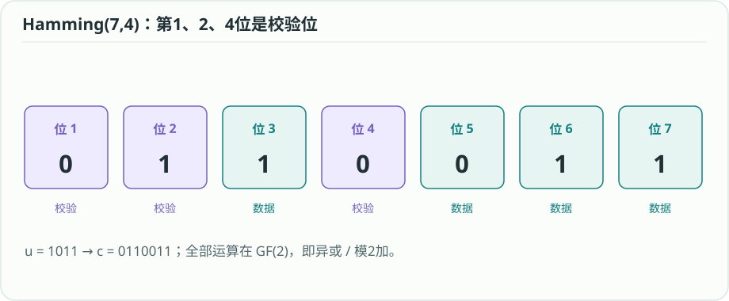
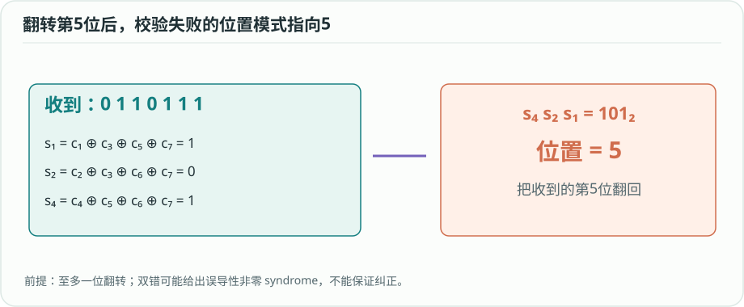

给七个比特加一点结构，如何定位是哪一位出错？
单纯把 4 个数据位发送出去，接收端很难知道哪个位置受到了噪声干扰。Hamming (7,4) 码通过添加 3 个经过精心选择的奇偶校验位，把 4 位数据映射为 7 位码字；只要发生的翻转不超过一位，接收端就能根据哪些校验失败来定位并纠正错误。
这不是“多发三份相同内容”，而是通过有限域 GF(2) 的线性约束，让不同单比特错误产生不同的校验模式（syndrome）。
线性码就是 GF(2) 上的子空间
一个二元 (n,k) 线性码是 GF(2)ⁿ 中维数为 k 的线性子空间，有 2ᵏ 个码字。给出满秩生成矩阵 G（形状 k×n），每条消息 u∈GF(2)ᵏ 映射为 c=uG（对 2 取模）。另有校验矩阵 H（形状 (n−k)×n），合法码字满足 Hcᵀ=0。
如果写成 H=[Pᵀ|I] 或系统形 G=[I|P]，这种形式还依赖把列重新排序到相容的位置；不可直接把任何顺序的 H 与 G 硬凑成标准系统形。
Hamming(7,4) 的位布局与三条校验方程
按位置 1、2、4 为校验位，3、5、6、7 为数据位。三条校验方程由位置编号的二进制位决定：
| 校验 | 覆盖码字位置 | GF(2) 条件 |
|---|---|---|
| s₁ | 1,3,5,7 | c₁⊕c₃⊕c₅⊕c₇=0 |
| s₂ | 2,3,6,7 | c₂⊕c₃⊕c₆⊕c₇=0 |
| s₄ | 4,5,6,7 | c₄⊕c₅⊕c₆⊕c₇=0 |

若数据 u=(1,0,1,1)，先填 c₃=1,c₅=0,c₆=1,c₇=1；解得 c₁=0,c₂=1,c₄=0，因此完整码字为 0110011。
Syndrome：为什么三位可以指出七种单比特错误？
收到 r=c⊕e，其中 e 是错误向量。合法 c 满足 Hcᵀ=0，因而 syndrome s=Hrᵀ=Heᵀ。若 e 只有第 j 位为 1，则 s 正好等于 H 的第 j 列。在选定的校验矩阵中，该列是位置 j 的三位二进制表示（低位到高位对应 s₁,s₂,s₄）。

发送码字固定为 0110011；交互只研究至多一处翻转，不是多错译码器。
汉明距离如何限制可纠正的错误数？
两个长度 n 码字之间的汉明距离是它们不相同的位置个数，记为 d_H(a,b)。若码的最小距离 d_min≥2t+1，则所有码字半径 t 的汉明球互不相交，最近邻译码可以唯一纠正至多 t 个错误。
Hamming (7,4) 最小距离 d_min=3，因此 t=1。检测能力通常可达 d_min−1=2 位错误，但这并不意味着双错可以被可靠纠正：双错 syndrome 非零时，单错解码器可能“纠正”错误位置，导致误判。
为什么称 Hamming(7,4) 为完美单错码？
长度 7 的二进制空间有 2⁷=128 个向量。每条码字半径 1 的汉明球包含它自己（0 错）和 7 个可能单错结果，共 8 个向量；Hamming (7,4) 有 2⁴=16 个码字。所以 16×8=128，且最小距离 3 保证这些球互不重叠，恰好把整个接收空间分割完。
把生成、验错、纠错写成可测试代码
本仓库的 Python 样例以固定位置约定实现 Hamming (7,4) 编码与单错译码，并枚举全部 16 个消息 × 8 种零错/单错情况，验证逐个恢复。
from examples.channel_coding import (
hamming74_encode, hamming74_syndrome,
hamming74_correct, hamming74_extract
)
code = hamming74_encode("1011")
assert code == "0110011"
corrupted = code[:4]+"1"+code[5:]
assert corrupted == "0110111"
assert hamming74_syndrome(corrupted) == 5
recovered = hamming74_correct(corrupted)
assert recovered == code
assert hamming74_extract(recovered) == "1011"工程上的 ECC 往往还需要处理软判决信息、交织、突发错误以及硬件资源限制；本章的 syndrome 算法是准确但非常有限的最小模型。下一章的循环码和 CRC 将在多项式代数中发展另一种结构。
来源与延伸阅读
- R. W. Hamming (1950), Error Detecting and Error Correcting Codes：原始纠错码构造。
- MIT 6.441 (2016) Linear Coding：线性码、校验及译码的理论关联。
- Cover & Thomas, Elements of Information Theory：纠错容量与码距离的背景。